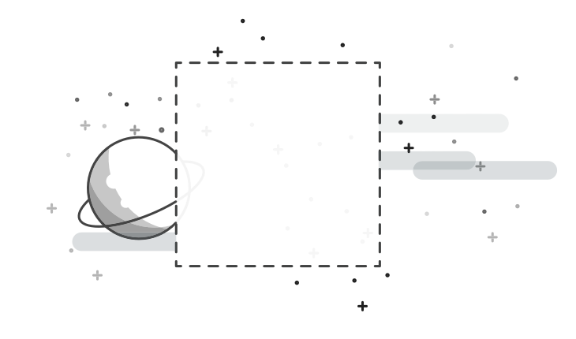

<div class="exception-body">
	<div class="exception-panel">
		

		<div class="line"></div>

		<h1>404</h1>
		<p>Halaman Tidak Ditemukan</p>
		<button pButton type="button" class="p-mr-2" label="Dashboard" [routerLink]="['/']"></button>
		<button pButton type="button" class="p-button-success" label="Kembali" (click)="kembali()"   pTooltip="Kembali ke menu sebelumnya"></button>
	</div>
</div>
